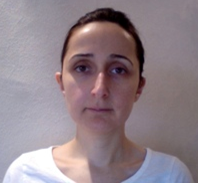
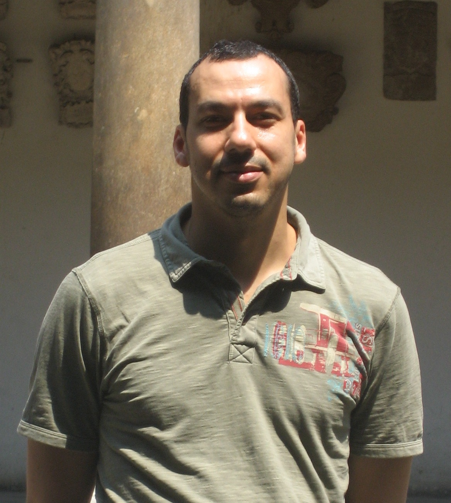

Common Motifs in Scientific Workflows:
An Empirical Analysis
This page represents a bundle for the contents of the analysis published at the Future Generation Computer Systems Journal (DOI: http://dx.doi.org/10.1016/j.future.2013.09.018). The analysis is an expansion of a paper published in eScience 2012 (link to the paper), and it is currently under review. The purpose of this web page is to make accessible, link and describe the inputs and outputs of the analysis, which are stored as a Research Object (pack) in myExperiment. You can also download all the materials here.
Abstract
Workflow technology continues to play an important role as a means for specifying and enacting computational experiments in modern Science. Reusing and repurposing workflows allow scientists to do new experiments faster, since the workflows capture useful expertise from others. As workflow libraries grow, scientists face the challenge of finding workflows appropriate for their task, understanding what each workflow does, and reusing relevant portions of a given workflow. We believe that workflows would be easier to understand and reuse if high-level views (abstractions) of their activities were available in workflow libraries. As a first step towards obtaining these abstractions, we report in this paper on the results of a manual analysis performed over a set of real-world scientific workflows from Taverna, Wings, Galaxy and Vistrails. Our analysis has resulted in a set of scientific workflow motifs that outline i) the kinds of data-intensive activities that are observed in workflows (data-oriented motifs), and ii) the different manners in which activities are implemented within workflows (workflow-oriented motifs). These motifs are helpful to identify the functionality of the steps in a given workflow, to develop best practices for workflow design, and to develop approaches for automated generation of workflow abstractions.
Inputs and examples of the analysis
The input of the analysis consists in 264 heterogeneous workflows belonging to a variety of domains. The next list summarizes the distribution of the workflows depending on the tool they belong, plus a link to where they can be downloaded and explored:
- Taverna: 129 workflows analyzed (accessible here)
- Wings: 89 workflows analyzed (accessible here)
- Galaxy: 26 workflows analyzed (accessible here)
- Vistrails: 20 workflows analyzed (accessible here)
All workflows analyzed are modeled as directed acyclic graphs, with no conditionals or loops. Two examples can be seen in the next figures, extracted from two workflows of Taverna and Wings:
Results of the analysis
- Workflow motif catalogue: set of motifs typically found among scientific workflows. The catalog was defined while the analysis was being performed and discussed by the authors. A description of the catalogue is described in the paper, but also in this link
- Workflow analytics: Derived after manually counting the motifs in the workflows. They are accessible in form of excel files:
- An ontology describing the motifs and providing the means to annotate workflows in a generic way. It is accessible here
We have also made available the experiment as a Research Object in myExperiment (pack). Check it out here.
About the authors
 |
Daniel Garijo is a PhD student in the Ontology Engineering Group at the Artificial Intelligence Department of the Computer Science Faculty of Universidad Politécnica de Madrid. His research activities focus on e-Science and the Semantic web, specifically on how to increase the understandability of scientific workflows using provenance, metadata, intermediate results and Linked Data. |
|  | Pinar Alper is a PhD student at the School of Computer Science of the University of Manchester. Her research work focuses on abstraction of scientific worflows and distillation of provenance information for data publishing. She currently participates in the EU Wf4EVER project and the myGrid project. |
|  | Khalid Belhajjame is a researcher at the University of Manchester. His general research areas are information and knowledge management, where he has contributed to research proposals in the fields of data integration, knowledge engineering of semantic web services, and scientific workflows. He is an active member of the W3C provenance working group, the DataONE scientific workflow and the Wf4Ever EU project. |
 |
Oscar Corcho is an Associate Professor at Departamento de Inteligencia Artificial (Facultad de Informática , Universidad Politécnica de Madrid) , and he belongs to the Ontology Engineering Group. His research activities are focused on Semantic e-Science and Real World Internet, although he also works in the more general areas of Semantic Web and Ontological Engineering. In these areas, he has participated in a number of EU projects (Wf4Ever, PlanetData, SemsorGrid4Env, ADMIRE, OntoGrid, Esperonto, Knowledge Web and OntoWeb), and Spanish Research and Development projects (CENITS mIO!, España Virtual and Buscamedia, myBigData, GeoBuddies), and has also participated in privately-funded projects like ICPS (International Classification of Patient Safety), funded by the World Health Organisation, and HALO, funded by Vulcan Inc. |
| Yolanda Gil Yolanda Gil is Director of Knowledge Technologies and at the Information Sciences Institute of the University of Southern California, and Research Professor in the Computer Science Department. Her research interests include intelligent user interfaces, social knowledge collection, provenance and assessment of trust, and knowledge management in science. Her most recent work focuses on intelligent workflow systems to support collaborative data analytics at scale. | |
| Carole Goble is a full professor in the University of Manchester School of Computer Science, where she co-leads the Information Management Group. She has worked closely with life scientists for many years and has an international reputation in the Semantic Web, e-Science and Grid communities. Carole is the Director of the myGrid project, a team that produce and use a suite of tools designed to “help e-Scientists get on with science and get on with scientists” |
Acknowledgements
This research was supported by the Wf4Ever European project (FP7-270192), a grant from the US Air Force Office of Scientific Research (AFOSR) through award number FA9550-11-1-0104, the FPU grant (Formación de Profesorado Universitario) from the Spanish Ministry of Science and Innovation (MCINN) and the myGrid platform grant. The authors would like to thank the many scientists and workflow developers that created the workflows used in this study and generously made them available to the community. We also would like to thank Pinar Senkul for her comments on possible ways of inferring motifs over existing workflow scripts and Bamdad Dashtban for providing useful references for our work.
This page is licensed under a Creative Commons Attribution-NonCommercial-ShareAlike 2.0 Generic License.